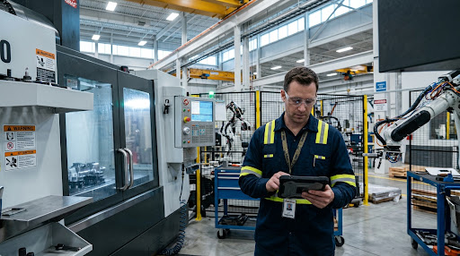
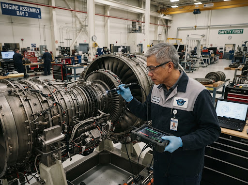

Static Instructions
Technical knowledge remains inside manuals and disconnected documents.
/
The future of industrial training
Turn technical manuals into interactive AR guidance. Help your workforce learn directly on real equipment, with AI assistance and measurable training progress.

Align the probe with reference point A before proceeding.
The training gap
When knowledge stays locked in documents, workers must translate instructions into action on their own.
Technical knowledge remains inside manuals and disconnected documents.
Workers often depend on experienced colleagues for explanations.
Traditional instructions can be interpreted differently across teams.
TrainLab brings knowledge directly to the point of work.
Spatial workflow engine
Give employees a clearer way to learn and perform technical procedures through contextual instructions and assistance.
Interactive concept preview — choose a workflow step
Precision alignment on a live production cell.

Implementation workflow
TrainLab creates a bridge between the knowledge you have and the work your teams need to do.
Upload training manuals and technical documentation.
AI organizes technical content into structured instructions.
Guidance is placed in the context of physical machinery.
Workers follow steps while organizations see training activity.
Core capabilities
Put visual instructions where the work happens.
Help workers find answers from their organization's training knowledge.
Worker Where is the inspection guide?
TL AI Open procedure 4.2.
Turn existing training documents into structured learning steps.
Understand training activity and employee progress.
Field assistant spotlight
Help workers find contextual answers from training content while they remain focused on the task.
Illustrative conversation — not a live chat input.
Field applications
Flexible enough for distinct operations, consistent enough to bring clarity to each training experience.
Bring standardized visual guidance to complex production tasks.
Support inspection and maintenance workflows at the asset.
Connect operational procedures to the work cell.
Give learners a practical route from theory to application.
Business value
Make everyday technical knowledge clearer, more accessible, and easier to carry into the work environment.
Bring relevant training information closer to the task at hand.
Give teams a shared, structured way to work through instruction.
Help new team members learn in the environment where they work.
See how training workflows are being followed across your organization.
FAQ
TrainLab is an industrial training platform designed to turn technical documentation into structured, contextual learning experiences for people working with real equipment.
TrainLab can present visual guidance in the context of a machine or work area, helping learners connect each instruction to the physical task. Specific capabilities depend on the implementation and hardware environment.
TrainLab is designed to work from your existing training manuals and technical documentation, organizing that knowledge into clearer workflows.
Hardware options depend on your use case and deployment plan. A TrainLab demonstration can help identify a practical setup for your teams.
The assistant is designed to help workers navigate authorized training knowledge and find relevant supporting material while they work.
TrainLab supports visibility into workflow activity and training progress so managers can understand how learning is moving through their teams.
Start with a conversation about your training environment, documentation, and priority workflows. Book a personalized demo to explore a suitable first use case.
Start your pilot workflow
Discover how TrainLab can turn your technical knowledge into interactive, on-site training experiences.